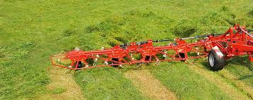
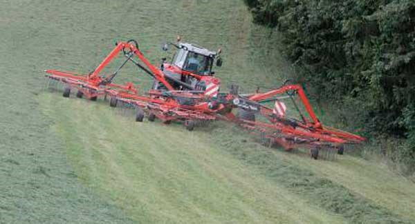

After you have the field mowed, ideally in the heavyier crops you want to have the grass wilt or dry out to increase dry matter yield. If you have asked us to do the mowing and used the BigM, we would have used the wild feature to spread outthe grass. Howver if yuo have mowed the grass your self and woudl like us to spread out the grass, we can use or Lely lotus tedder to spread out the grass for wilting.
WIT Agri Contractors Ltd offer tedding service using 8 rotor lely lotus tedder. This is a quick and easy way to spread out the grass. If you have a very wet crop, it might be a good idea to run this twice to let more of the grass see the sun, and also to lift teh grass off the ground. In a hot summers day, 24 hours is enough time to wilt.
Once your grass is at optimal dry matter yeild, or dry enough, WIT Agri contractors have the option to rake up the grass into 30ft rows before baling. Using 30ft rows provides the baler with a nice even flow of grass so taht we get eevn solid bales well packed. Also the 30Ft rows alow the ground to dry better between the rows before entereirng wotht ht eheavy baler, especially at the headlands.